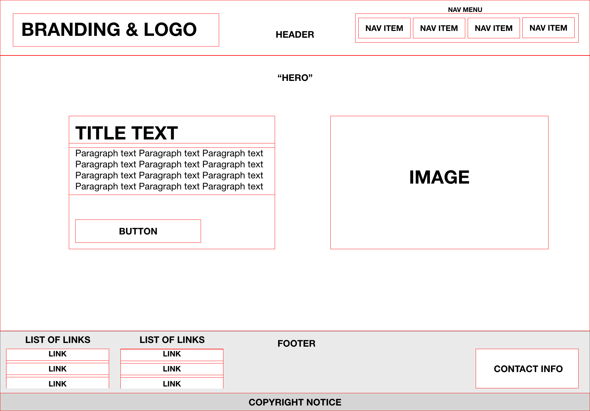

The Anatomy of a Website

Are you new to web development, and find yourself wondering what goes in to all these websites? This article may be for you!
For newcomers, jumping straight into code can be a daunting task. For somebody that’s been creating websites for a while, the layout of a HTML page might seem simple, or even obvious. This is the curse of knowledge at its peak here, so in this article I will be discussing websites at each layer of the stack, so that you can see exactly how it is built, and why it is built the way it is.
The Front End
The front end of a website is the bit that you physically see. In most cases, a person has designed this layout, and then someone has used HTML and CSS to create each element and add style & positioning to it in order for it to look good.
Layout
Typical elements for a website layout include:
- Header
- Footer
- Navigation
- Hero
- Buttons
- Titles
- Paragraphs
Take a look at the example diagram below to get a feel for which elements are which, and where they might be placed on a typical website.

Each element is represented by a red box. Elements can contain as many elements as necessary, and nested as many times as necessary. However, most web developers try to avoid excessive nesting to improve legibility for screen readers.
Technologies Used
The three core languages used in the front end are HTML, CSS and Javascript. Everything else you see will be based on and around these core 3.
HTML
HTML is the structure and content of the web page. If you stripped a page of everything but the HTML, you would end up with just the raw text and images in a very bland black & white (and a bit of blue) website.
HTML uses elements. All elements are indicated with a chevron on either side of the name of the element, like <header>. For most elements you will then need to close it with the same but with a leading forward slash, like </header>
CSS
CSS is the design and positioning of your website. Any colours, positioning and placemenet are down to CSS. A few examples:
- How much padding an element has.
- The background colour of your website.
- How big your images are.
Many people find CSS annoying and frustrating to use, so a common tool used alongisde it is SASS, which allows for better organisation and control over the code used.
Javascript
Javascript can be used for many different things on a page, but when starting out it is mostly used for interaction with the page such as clicking on a button to trigger an action.
However, you can do amazing things with javascript once you get to know it. Here are some examples of where it’s used on this website:
- Resize the header when the user scrolls.
- On mobile, show the navigation menu when the hamburger icon is clicked (and then hide it again).
- Change the colours of the website when the lightbulb button is clicked.
- Remembers whether the colour scheme has been changed from page to page.
- Stores whether it’s your first visit to the homepage or not, to know whether to play the full animation.
- Filter the entries on the portfolio page based on the users selection.
Further Technologies
There are a number of frameworks that have been created to aid developers in creating a variety of different web pages. These include:
- React
- Angular
- Vue
At a beginner level, this isn’t something that you need to worry about. These frameworks are used to create single page applications (SPA) and work by using reusable components.
The Back End
The back end is primarily responsible for the storage and manipulation of data, and is completely hidden from the user. Some technologies that you may have heard of:
- PHP / Laravel
- Ruby / Ruby on Rails
- Python / Django
- Node / Express
Each of these has their pros and cons, as well as respective frameworks used to improve their functionality and the speed of getting a website up and running. You’ll find that web developers can be quite militant about which technology to use, with PHP being the most easy to hate (despite being used by Facebook and Wordpress), and node being favourable with boot camps and young developers due to its scalability.
On top of the backend technologies, there are also several types of database, such as MySQL and MongoDB.
More Tools & Technologies
There is a lot more to web development than this, with tools and processes that are made to make the whole process easier for everybody.
CMS
A CMS is a popular tool used by web developers to allow for the target user to be able to add, edit and delete content from their website without having to dig in to the code. One of the most popular CMS is Wordpress.
Static Site Generator
A static site generator allows the back-end to be ignored, with no database calls while still allowing for dynamic content to be displayed without having to hard-code everything. This provides more security for the site and less risk of being hacked, as everything is carried out client-side. It is becoming a popular choice for web developers, with this site itself being created in Jekyll, one of the most popular static site generators.
Git & Version Control
You may have heard of git, the most popular form of version control. Do you remember in school, where you would end up with 15+ copies of different iterations of the same file, possibly named ‘report’, ‘report2’, ‘reportFINAL’, ‘reportFINALLLL2’? I know I did.
Git is the answer to this problem, as it tracks each and every version without it cluttering up your documents. It also allows multiple people to work on the same project, integrated with github people can take someone elses work, make changes, and then request that their version be added to the master branch! This is how open-source projects are able to function without all contributors wanting to pull their hair out.
To Conclude
I’m very new to writing blogs, so any feedback & criticisms are welcome. However, I hope you enjoyed reading, and hopefully learned something if you are a #CodeNewbie!
Tweet